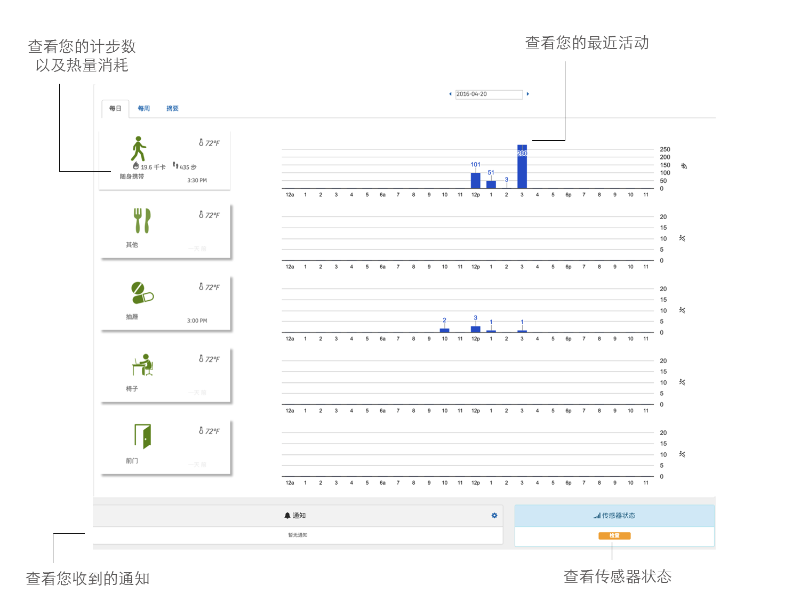

Using the SilverLink user dashboard
Once the system has been set up, you can stay updated on your loved one’s daily activities by using the SilverLink User Dashboard and setting up your notification preferences so that SilverLink can send you an alert when something isn’t right.
